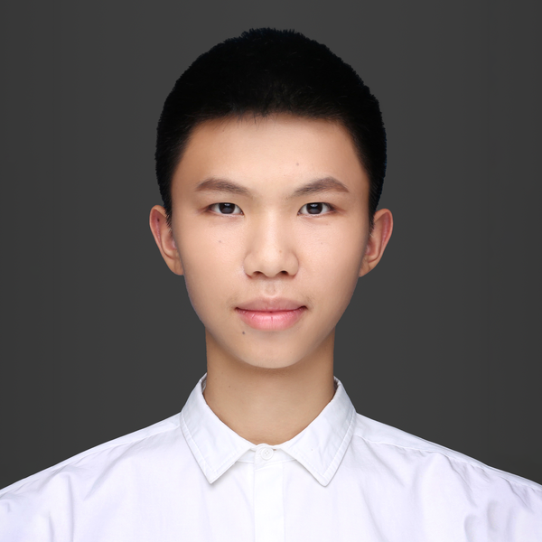
游戏设计与开发作品集 Email · Github · bryantan.net
谭磊轩展示作品一览1 游戏体验心得节选1.1 《宝可梦黑/白》 体验记录1.2 《绝区零》博客节选1.3 《符文工房3》体验记录1.4 《洛克王国：世界》体验记录1.5 《航海王壮志雄心》体验记录2 ArachNOT（横板 2D 解谜）3 Hamsterballin'（街机赛车）4 逆转裁判 C++ 复刻（ADV）5 C++ 个人引擎
| 项目 | 来源 | 类型 | 引擎 | 规模 | 贡献 | |
|---|---|---|---|---|---|---|
| 1 | 游戏体验心得节选 | 个人 | 游戏分析，测评 | 策划 | ||
| 2 | ArachNOT | 团队 | 横板 2D 解谜 | Unity | 4 人 | 策划 / Gameplay 程序 |
| 3 | Hamsterballin' | 团队 | 街机多人赛车 | Unreal | 40 人 | AI 程序 |
| 4 | 逆转裁判 C++复刻 | 个人 | 互动 ADV | C++ | 全部 | |
| 5 | C++个人引擎 | 个人 | 2D / 3D 技术演示 | C++ | 全部 |
日常记录的一些对游戏产品的思考心得，这里列举几篇节选文章。
本篇是聊宝可梦黑/白的，这种 Excel 形式是我个人常用的记录习惯。
业余时间我一般只拆自己的体验而不拆系统，体验没提炼到位的话，拆系统意义不大。
首先会把自己主玩的内容、好体验坏体验、新手体验这些先全部回顾总结；然后尝试把握一下大思路，从玩家生态构成、驱动力追求、游戏循环的角度梳理一遍；最后把一些印象比较深或者值得讲的局部拿出来聊。
这篇是把博客里聊绝区零的东西贴一些过来，因为是博客文章所以解释说明有点多，没有那么精炼。有些是开服记录的，有些是退坑后补充的，都是探讨一些特定的设计点。虽然离现在有一段时间了，但也能体现思考过程和一些关注的聚焦点。
……绝区零的招架和闪避被视为一种简易 QTE，在开服时就因为“过于简单”被猛烈集火过。这是一个被低估的利大于弊的设计。虽说根源上来自《合金装备》，但用在绝区零里的思路明显不同。它的效果有两个：
第一，在于让整个游戏的技巧障碍 (Skill Barrier) 有非常低的起点；第二，在于它刻意构建了技巧深度上明确的递进分层。
后者不容易被注意到，但实际上更关键。有的设计者也称之为“自我再造” (Reinvention)，它指的是玩家随着技巧提升，解放注意力并意识到新的挑战内容，于是游戏的技巧范围不断扩展（《体验引擎：游戏设计全景探秘》）。
从这个角度来说，招架和闪避制造了极明确的“第一层挑战”：金光红光的存在感如此之强，以至于即便你从未玩过动作游戏，在接触战斗时也会瞬间意识到这是首要的挑战内容。等掌握这部分之后，才是角色技能、特性的利用，然后再延伸到建立在连携机制上的合轴之类的其它技巧。
这种明确的递进好在哪呢？
我们可以找个反向的例子来对比：一个从不玩射击游戏的玩家，在刚开始玩战术射击游戏（如 Valorant）的时候往往不知所措，因为没办法从游戏提供的信息和反馈里明白自己该做什么/做错了什么。
唯一知道的是看到人要对枪和瞄准，而对枪中包含的身位控制和选位决策又不是显而易见的挑战。所以新手容易挫败于自己总是莫名其妙死亡，玩了几局一直在努力拖鼠标但好像没有进步。
这是因为战术射击游戏的复杂度是多管齐下的。如何买枪和道具、人该往哪去、怎样对枪，这些所有的事情会在同一局游戏里一股脑的糊在玩家脸上，所以我们为了跨越最低限度的技巧障碍就感觉要学很多东西。同样的情况在所有高门槛的游戏品类里都随处可见。
而绝区零刻意制造出分层，首先展露自己友好的一面，这当然值得学习。我们在《街霸6》里看到的现代模式这样的设计，其诞生的目的也是类似的，可谓有异曲同工之妙。所以说招架和闪避设计的实际影响在普通玩家中是被低估的。
……
我退坑《绝区零》《崩坏：星穹铁道》的直接原因，都可以归为对活动/小游戏玩法不满意。绝区零是 2.0 的随便观经营，我能 get 策划想制造什么体验，但认为考虑欠妥。星铁是 1.1 银狼版本的贴纸拍照活动，这个是认为无聊、不够尊重玩家的时间。
于是想记录一下自己对活动玩法的思考：
米游的活动在二游活动里很有代表性，基准是只要玩家投入时间就能拿满奖励。这就对难度和形式有要求，因为玩家之间的水平差异巨大。这也是在活动里很少玩到难度适宜、能让人紧张兴奋的游戏的原因。
显然并不是所有小游戏都适合作为活动玩法。既然如此，哪些玩法是合适的？该怎么评判一个活动玩法本身的质量？
T0 级别，是那种基础体验有趣、玩完一局之后意犹未竟的游戏（基础体验指的是游戏的操控本身就能产生乐趣，比如马里奥的跳）。绝区零上过的糖豆人玩法、星铁的豹豹碰碰大作战可以放在 T0。蛇对蛇如果进活动，也应该在 T0。
T1 级别是确实具备休闲乐趣、适合所有人的小游戏玩法，比如宝开的宝石迷阵、祖玛、幻幻球。它们都是那种让玩家通关时愉快地认为自己干的不错的类型。
上面这两档都很适合加花做变化，然后重复利用，因为底子足够好非常容易产生好的变体。
T2 级别是有广泛受众但是未必能匹配所有人的玩法，比如音游、塔防之类的。这些玩法往往本身有一定的潜力，但由于玩家水平差异的问题，只能给关卡设置不太有趣的难度，容易让人感到无聊。我想既然只是为了维持活跃和投放奖励，可以考虑做一种可复用的动态难度机制，来让不同水平的玩家在这类玩法中都能感受到乐趣。
T3 级别也就是最差劲的一档，我称之为“无论怎么调整难度都不可能让人感到有趣”的玩法。星铁 1.1 银狼版本的找贴纸拍照的活动毫无疑问就是属于此类。只有插需求赶工，或者沉迷小众爱好并且对市场缺少敬畏，这两种情况才能解释这类玩法上线。
绝区零 2.0 版本的随便观经营玩法是另一个问题。
策划的这个玩法设计所预期的，是“玩家下空洞/做任务”和“家里挂着机就有奖励”的穿插结合和互补的体验。我们可以理解为来源于那种有事情可做的放置游戏，打个本研究下配置回来就发现又能拿奖励然后提升角色，然后变强了又去做更多的事情。
这在放置游戏当然是好体验甚至是核心体验，给人一种“轻松变强”的感觉。但移到绝区零就存在问题：第一，别人做的是数值膨胀，整个循环能够成立，而绝区零主玩法的数值膨胀不了，随便观只是用来投奖励的副玩法，带来的反馈必然不够；第二，放置游戏的循环，直接对应放置游戏的受众，而绝区零的玩家生态构成、大家玩游戏的习惯是跟放置游戏的受众有差别的。
至少像我这样原本上线频率不高、不怎么做任务、只是集中打一下奖励玩家就被筛选了，因为我感觉到“你希望我玩游戏的方式”不尊重我们原本的习惯。这样，一个出发点可能是“低负担”“送福利”玩法就产生了坏的结果。更何况各种题材的模拟经营玩法在我这本来也就至多排到 T2，体感比较无趣。
……
……以角色扮演的 3D 场景，取代大片按钮 UI + 角色/家园美术作为第一屏和“选关界面”，是推关二游这种形态的一个明显进步，“操控主角行动”相比纯功能界面给了玩家更强的自主感。
这相当于汲取了大世界游戏的优点，但又不改变建立在关卡单元上的底层逻辑，保留了生产方面的优势。
虽然进步很有推广的价值，但我们依然可以看到这种做法在绝区零里面尚存的一些问题。
……
……新艾利都实际成为一个“包装层”。原本在包装之下的关卡内容单元，它们是相互隔离的，无法跨越不同系统进行有效的组织。但玩家在接受了这层精美的、有沉浸感的包装以后，这种“关卡即内容”的推关游戏传统忽然就难以令人信服，因为产生了叙事上的错位：
在一个典型的“剧情1 -> 新艾利都 -> 剧情2”游玩过程中，除了那个用来开启下个关卡的 NPC，新艾利都始终都保持着“不知情”的状态——它把所有剧情隔绝了，存在于新艾利都的代理人全都是没有记忆的克隆体。
你在专注模式经历了多少事件的来龙去脉，归来却无法肯定那些记忆真的在此发生；你在街头偶遇的那个代理人，并不知晓它“自己”的过往。
这就是为什么我们在这个“包装层”经历的事件有种虚无感（尤其是在同个事件反复发生的时候）只有在专注模式里播放的剧情才像真人出镜。玩绝区零的时候我对很多代理人的日常工作根本没有实感，而玩星铁的时候却真的相信贝洛伯格有一个地火组织在顽强生存。
正因为有“包装层”的幻觉，玩家会期待绝区零能做到像 3A 游戏那样讲述有代入感的连贯故事，但在其它传统推关二游里，玩家完全清楚“11-8”这样的关卡就是机械的、单元化的。
那有没有可能在新艾利都这一侧，把这些分散在各个系统的叙事单元串联起来呢？我们可以试想一下，理想状态下绝区零的各个内容玩法可能是怎样组织的：
可见，游戏目前完全不具备梳理玩法叙事的能力。如果我们想解决叙事上的不和谐，这些玩法系统继续井水不犯河水当然不行，但很可能又舍弃不了解耦带来的生产优势，舍弃不了单元化的内容。
客观来说，生产可以追求低耦合，但前提是体验应当保持高内聚。当然，对于已上线的游戏，这种大结构的问题恐怕调整起来会很有难度。新艾利都作为玩家认知里所有叙事的汇集点，目前确实还不能完全满足所有玩家的期待。
……
本篇记录的是生活模拟（种田）游戏符文工房 3 的体验。本作和二游有相似之处，所以主动找来学习了一下。
本篇记录的是大世界捉宠游戏洛克王国世界 S1 赛季的体验，充值在 3000r 以上。虽然时间靠近期末，还是尝试了一下冲榜。
这是最早的一篇，记录航海王壮志雄心，体验只覆盖半个月，而且是初次接触格斗游戏。主要体现我接触一个新产品时候的思考方式。
ArachNOT 是一款横板 2D 解谜游戏，玩家扮演一只因不会正常攀爬而受到排挤的蜘蛛，利用它特殊的弹性蛛网穿越障碍、躲避危险，登至蜘蛛巢穴顶部。
可玩 EXE 附于 ArachNOT 文件夹，推荐使用 Xbox 控制器游玩。
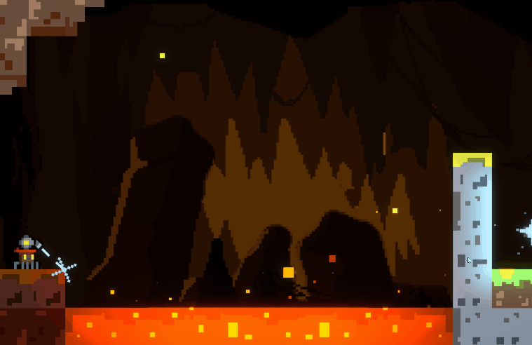
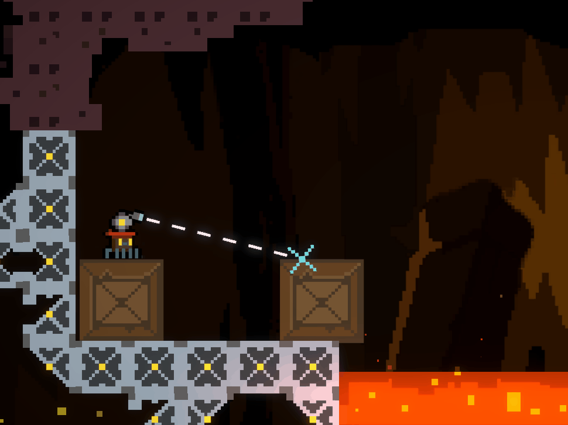
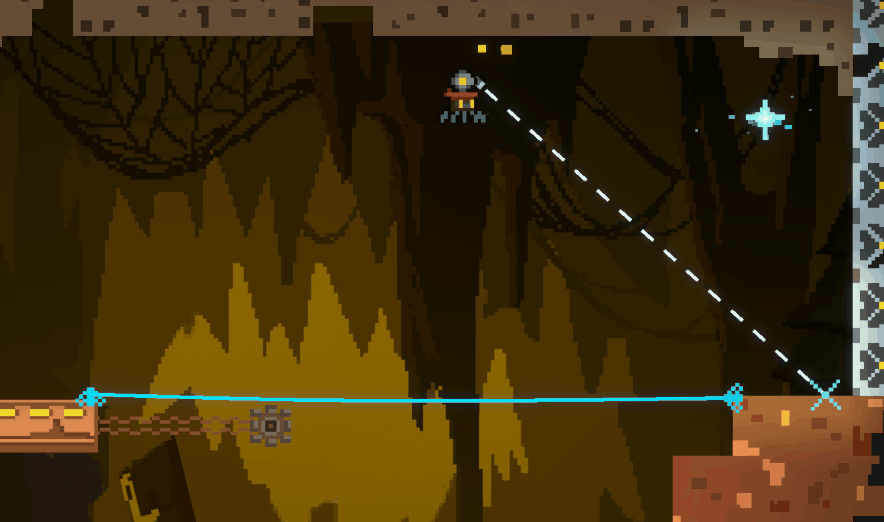
Hamsterballin' 是一款街机风格多人赛车游戏，SMU Guildhall TGP II 团队项目。玩家操控仓鼠在三条风格各异的赛道上竞速，利用仓鼠球独特的滚动和弹跳物理，配合七种道具争夺第一，支持最多四人本地分屏。我在项目中主要负责 AI 部分。
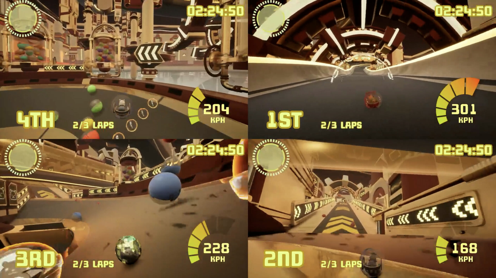 |
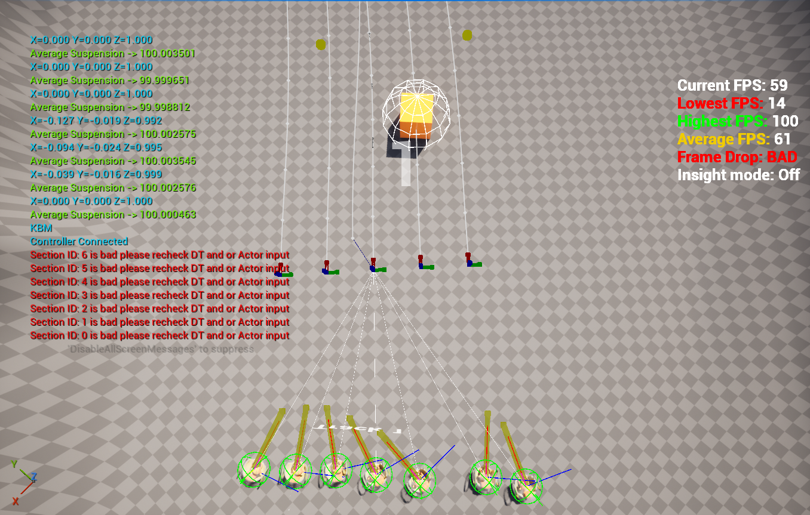 |
仿照《逆转裁判》制作的互动 ADV 游戏，使用自己的 C++ 引擎开发。还原了原版第一章的流程，包括对话、法庭辩论和交叉询问。
可玩 EXE 附于 Ace Attorney Approximation 文件夹，推荐使用鼠标游玩。
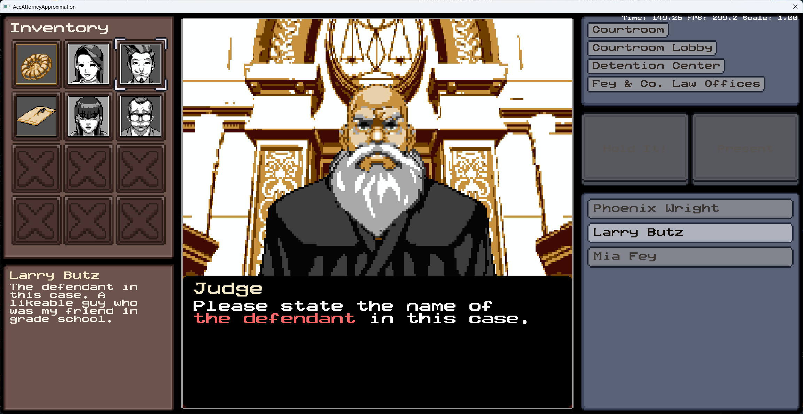 |
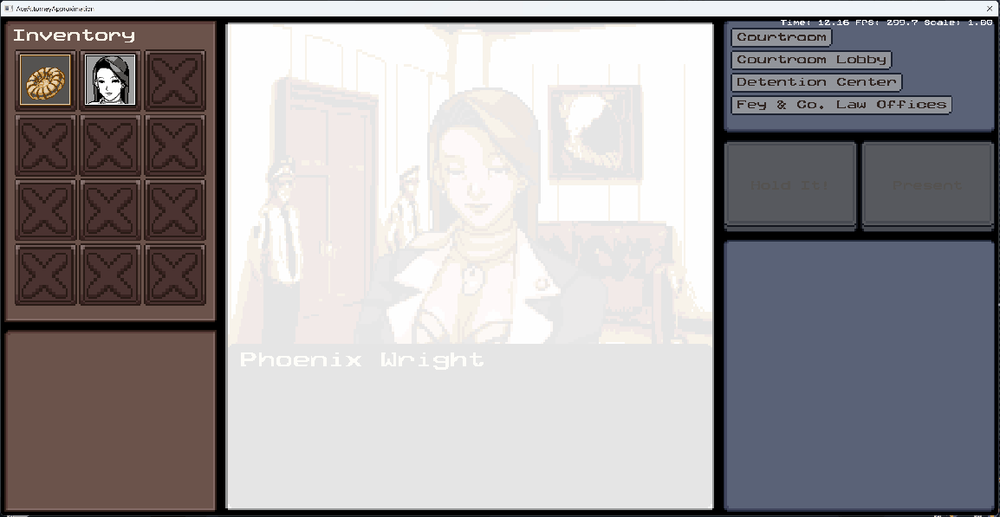 |
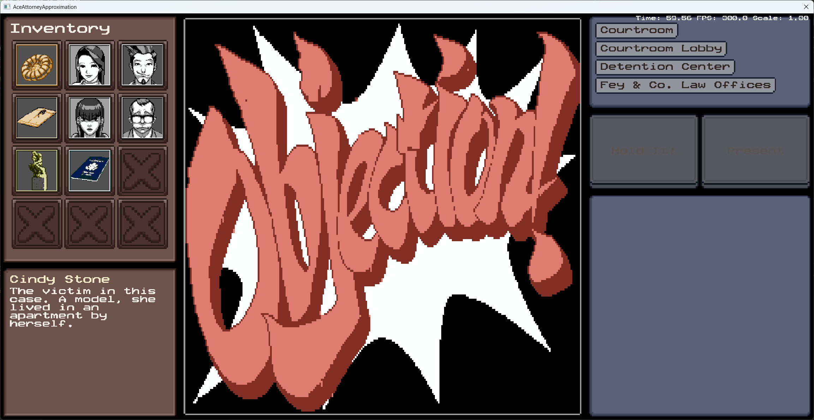 |
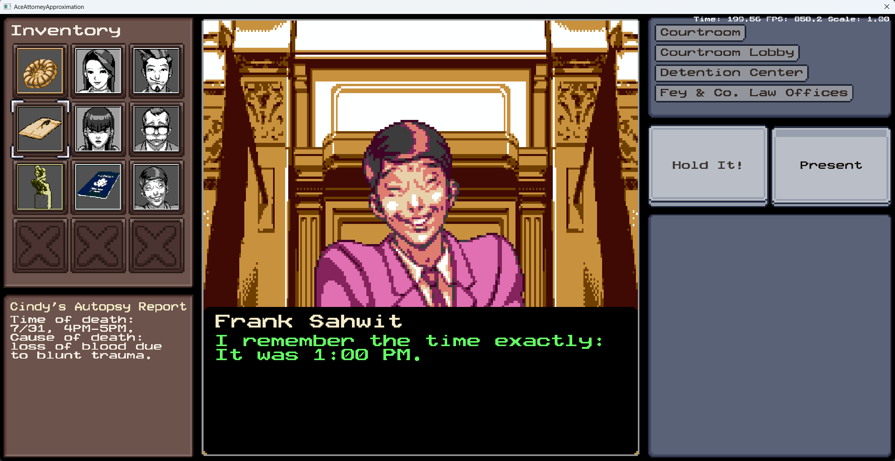 |
2D 和 3D DirectX 11 渲染，支持 OBJ 和 FBX 模型加载，支持 Blinn-Phong 光照和 shader。
实现了事件系统、游戏内控制台命令调试、TCP 网络连接对战、手柄和鼠标输入、2D 简易物理、精灵图和动画、字体与文本框、ImGui 和保留模式 UI、多线程资源加载和资源池、支持 JSON 和 XML 数据驱动。
多个演示项目 EXE 附于 C++ Engine Demo 文件夹。
NetChess3D 项目支持多线程资源加载，简单 TCP 网络对战，多套 OBJ 棋子模型即时切换。
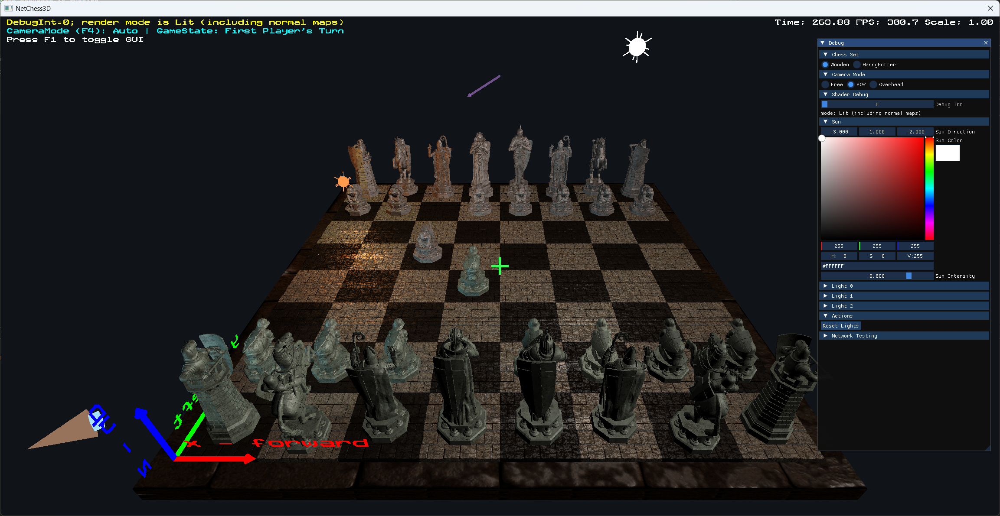 |
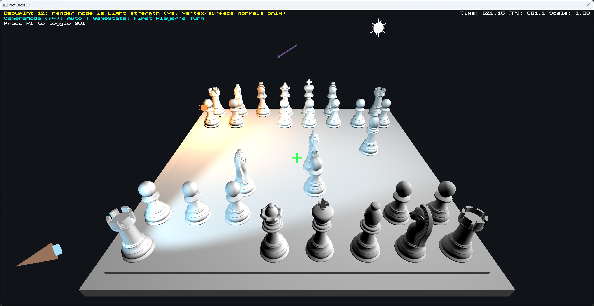 |